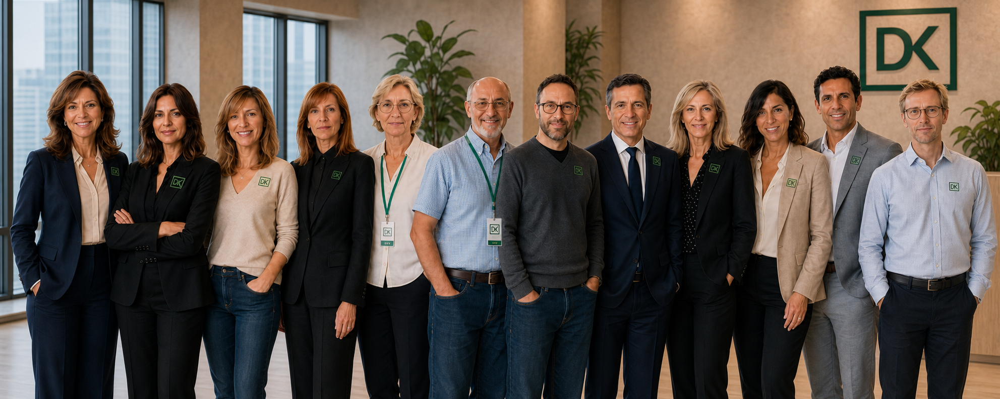
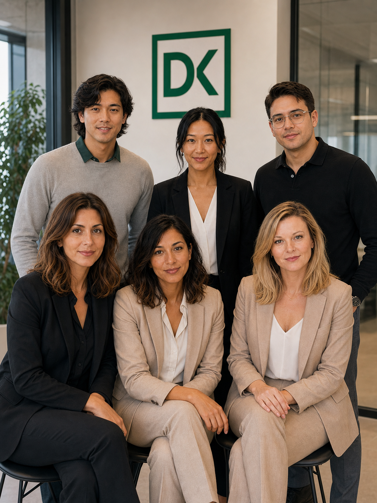
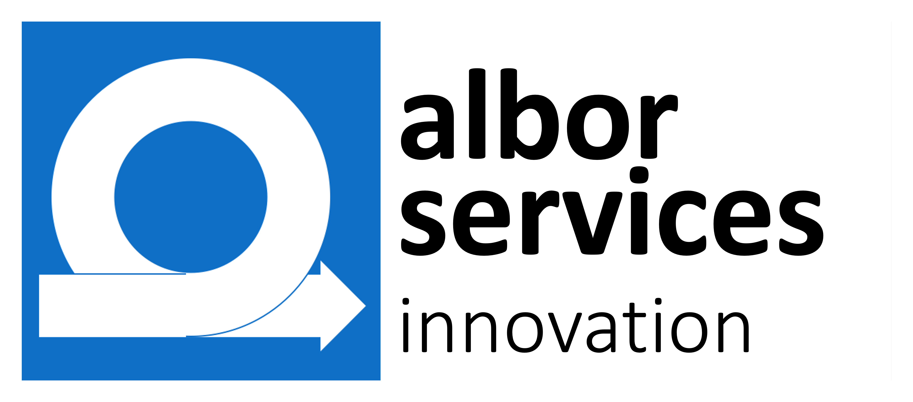
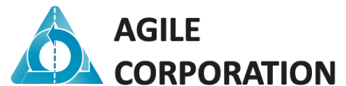

DKtec no te asesora sobre tecnología: la simplifica, la dinamiza y la hace resiliente.
Desde sistemas heredados hasta continuidad ante imprevistos y equipos de IA. Integramos la tecnología con tus objetivos de empresa.

Las tres preguntas que se hace todo CEO
Riesgo
¿Hasta qué punto estoy en riesgo ante imprevistos?
Un solo incidente sin plan puede parar tu operación más tiempo del que crees.
Eficiencia
¿Cómo puedo ser más eficiente?
Cada proceso manual que se automatiza es tiempo que vuelve a tu equipo.
Competitividad
¿Cómo puedo ser más competitivo?
Quien resuelve esto antes ya te lleva ventaja.
Simplificación, dinamismo y resiliencia
Ayudamos a la empresa mediana a ganar en simplificación, dinamismo y resiliencia. No te asesoramos, lo hacemos por ti: coordinamos lo necesario para que tú no tengas que gestionarlo.
Simplificación
Para reducir costes.
Te ayudamos a modernizar los sistemas que ya tienes con IA.
Dinamismo
Para ganar competitividad.
Te ayudamos a moverte más rápido que tu mercado, con procesos más ágiles y menos fricción operativa, todo con un equipo de agentes IA a tu servicio.
Resiliencia
Para prepararte ante cualquier imprevisto operativo.
Gestión de vulnerabilidades, riesgo tecnológico y planes de continuidad de negocio.
Tu propio equipo de IA
ChatGPT es un genio que acaba de llegar a tu empresa y no conoce a nadie. El agente a medida es un consultor que se va con la llave en el bolsillo. dkagora.ai es tu propio equipo: conoce tu casa, se queda en ella y crece contigo.
No te vendemos una herramienta de IA. Te montamos tu propio equipo de IA: conoce tu casa, se queda en ella y crece contigo.

Tratamos el riesgo tecnológico como lo que es: riesgo de negocio
Vulnerabilidades, continuidad y decisiones claras sobre qué pasa si algo falla — sin informes técnicos que no vas a leer.
Ver Gobierno de IT →Tecnología que sostiene negocios
Buena parte de las empresas medianas españolas funciona sobre sistemas que llevan años dando servicio y que nadie quiere tocar por miedo a romperlos. Nosotros trabajamos exactamente ahí: los mantenemos vivos, los llevamos a tecnología moderna sin reescribirlos desde cero, y los abrimos al navegador y a la nube cuando toca. No es nostalgia: es que ese sistema es tu negocio.
Ver tecnologías y partners →Con quién trabajamos
No lo hacemos todo dentro de casa, y no pretendemos lo contrario. DKtec funciona como una empresa virtual: nosotros gobernamos la entrega y respondemos ante ti, y nos apoyamos en partners especializados para ejecutar. Así te damos el 80% del valor al 20% del coste, sin que tengas que gestionar tú esa complejidad.


Lo usamos en nuestra propia casa
DKtec es una empresa joven con gente que no lo es. Detrás hay décadas de oficio en los sistemas que sostienen a las empresas medianas españolas — y una decisión: en vez de contarte lo que la IA puede hacer por ti, la hemos aplicado primero a nuestra propia casa. Nuestro aval no es un catálogo de clientes de veinte años. Es que esta empresa ya funciona como queremos que funcione la tuya.
Lo usamos en casa
Nuestra propia operación diaria la ejecuta un equipo de agentes de IA con nombre, rol y supervisión humana. No es una demo: es cómo trabajamos cada día.
Red de partners que ejecuta
Funcionamos como empresa virtual: gobernamos la entrega y nos apoyamos en partners especializados para ejecutar. Núcleo pequeño, mucho apalancamiento.
Con respaldo
Contamos con seguro de responsabilidad civil profesional, con cobertura específica frente a la pérdida de datos.
¿Hablamos?
Cuéntanos qué te quita el tiempo hoy.
Hablemos